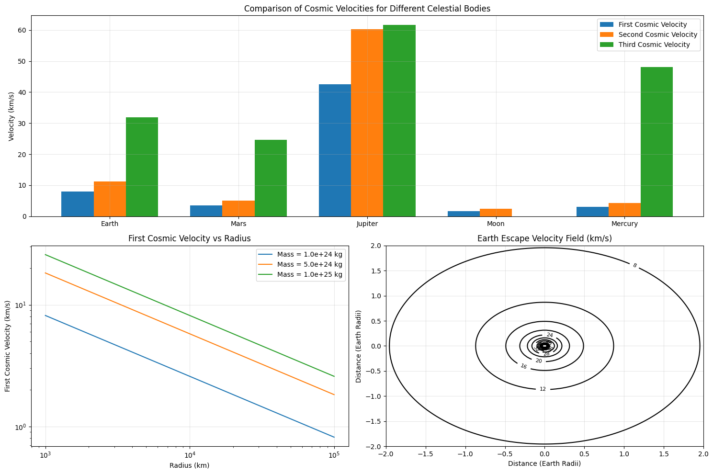
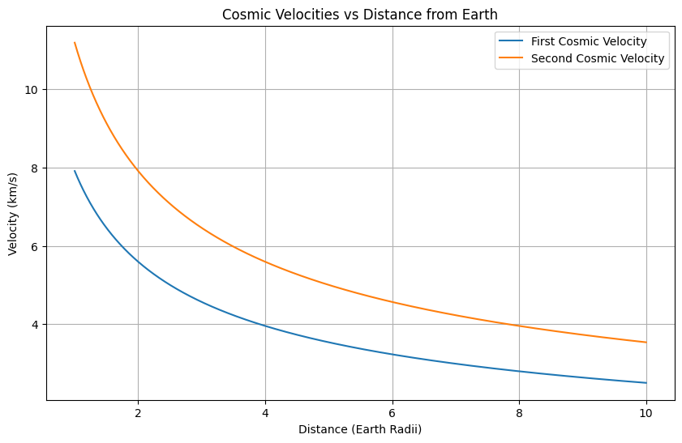

Problem 2
Escape Velocities and Cosmic Velocities
1. Theoretical Foundation
1.1 Basic Principles of Gravitational Escape
The concept of escape velocity emerges from the principle of energy conservation. For an object to escape a celestial body's gravitational field, its kinetic energy must equal or exceed the gravitational potential energy:
Where: - \(m\) is the mass of the escaping object - \(v\) is the velocity - \(G\) is the gravitational constant - \(M\) is the mass of the celestial body - \(R\) is the radius from the center of the celestial body
1.2 The Three Cosmic Velocities
- First Cosmic Velocity (Orbital Velocity)
- For circular orbit: Gravitational force equals centripetal force $$ \frac{GMm}{R^2} = \frac{mv_1^2}{R} $$
-
Solving for \(v_1\): $$ v_1 = \sqrt{\frac{GM}{R}} $$
-
Second Cosmic Velocity (Escape Velocity)
-
From energy conservation: $$ v_2 = \sqrt{\frac{2GM}{R}} = \sqrt{2}v_1 $$
-
Third Cosmic Velocity (Solar System Escape Velocity)
- Combines planetary escape velocity with solar escape velocity: $$ v_3 = \sqrt{v_2^2 + v_{sun}^2} $$ where \(v_{sun}\) is the orbital velocity around the Sun.
Let's visualize these relationships with Python:
import numpy as np
import matplotlib.pyplot as plt
from scipy.constants import G
# Set style
plt.style.use('default') # Using default style instead of seaborn
colors = ['#1f77b4', '#ff7f0e', '#2ca02c', '#d62728', '#9467bd'] # Custom color palette
def calculate_velocities(mass, radius, distance_from_sun=None):
"""Calculate cosmic velocities for a celestial body"""
v1 = np.sqrt(G * mass / radius)
v2 = np.sqrt(2) * v1
if distance_from_sun:
v_sun = np.sqrt(G * 1.989e30 / distance_from_sun) # Sun's mass
v3 = np.sqrt(v2**2 + v_sun**2)
return v1, v2, v3
return v1, v2
# Celestial body data (mass in kg, radius in m, distance from sun in m)
bodies = {
"Earth": (5.972e24, 6.371e6, 1.496e11),
"Mars": (6.417e23, 3.389e6, 2.279e11),
"Jupiter": (1.898e27, 6.9911e7, 7.786e11),
"Moon": (7.34767309e22, 1.737e6, None),
"Mercury": (3.285e23, 2.439e6, 5.79e10)
}
# Calculate velocities
velocities = {body: calculate_velocities(mass, radius, dist)
for body, (mass, radius, dist) in bodies.items()}
# Create visualization
fig = plt.figure(figsize=(15, 10))
gs = plt.GridSpec(2, 2)
# Plot 1: Bar comparison
ax1 = fig.add_subplot(gs[0, :])
bodies_list = list(bodies.keys())
v1_vals = [v[0]/1000 for v in velocities.values()] # Convert to km/s
v2_vals = [v[1]/1000 for v in velocities.values()]
v3_vals = [v[2]/1000 if len(v) > 2 else 0 for v in velocities.values()]
x = np.arange(len(bodies_list))
width = 0.25
bars1 = ax1.bar(x - width, v1_vals, width, label='First Cosmic Velocity', color=colors[0])
bars2 = ax1.bar(x, v2_vals, width, label='Second Cosmic Velocity', color=colors[1])
bars3 = ax1.bar(x + width, v3_vals, width, label='Third Cosmic Velocity', color=colors[2])
ax1.set_ylabel('Velocity (km/s)')
ax1.set_title('Comparison of Cosmic Velocities for Different Celestial Bodies')
ax1.set_xticks(x)
ax1.set_xticklabels(bodies_list)
ax1.legend()
ax1.grid(True, alpha=0.3)
# Plot 2: Velocity vs Radius relationship
ax2 = fig.add_subplot(gs[1, 0])
radii = np.linspace(1e6, 1e8, 1000)
masses = [1e24, 5e24, 1e25]
for i, mass in enumerate(masses):
v1 = np.sqrt(G * mass / radii)
ax2.plot(radii/1000, v1/1000, label=f'Mass = {mass:.1e} kg', color=colors[i])
ax2.set_xlabel('Radius (km)')
ax2.set_ylabel('First Cosmic Velocity (km/s)')
ax2.set_title('First Cosmic Velocity vs Radius')
ax2.legend()
ax2.set_xscale('log')
ax2.set_yscale('log')
ax2.grid(True, alpha=0.3)
# Plot 3: Escape velocity field
ax3 = fig.add_subplot(gs[1, 1])
x = np.linspace(-2, 2, 100)
y = np.linspace(-2, 2, 100)
X, Y = np.meshgrid(x, y)
R = np.sqrt(X**2 + Y**2)
V = np.sqrt(2*G*5.972e24/(R*6.371e6))/1000 # Earth's escape velocity field
contour = ax3.contour(X, Y, V, levels=15, colors='black')
ax3.clabel(contour, inline=True, fontsize=8)
ax3.set_title('Earth Escape Velocity Field (km/s)')
ax3.set_xlabel('Distance (Earth Radii)')
ax3.set_ylabel('Distance (Earth Radii)')
ax3.grid(True, alpha=0.3)
plt.tight_layout()
plt.show()

2. Analysis of Results
2.1 Velocity Relationships
Let's examine how these velocities vary with distance from a celestial body:
# Create distance-velocity relationship plot
plt.figure(figsize=(10, 6))
distances = np.linspace(1, 10, 1000) # In Earth radii
earth_mass = 5.972e24
earth_radius = 6.371e6
v1 = np.sqrt(G * earth_mass / (distances * earth_radius)) / 1000
v2 = np.sqrt(2) * v1
plt.plot(distances, v1, label='First Cosmic Velocity')
plt.plot(distances, v2, label='Second Cosmic Velocity')
plt.xlabel('Distance (Earth Radii)')
plt.ylabel('Velocity (km/s)')
plt.title('Cosmic Velocities vs Distance from Earth')
plt.grid(True)
plt.legend()
plt.show()

2.2 Key Observations
- Inverse Square Relationship: Both first and second cosmic velocities decrease with the square root of distance.
- Mass Dependence: Larger celestial bodies require higher velocities for escape.
- Radius Effect: For a given mass, smaller bodies have higher surface escape velocities.
3. Applications in Space Exploration
3.1 Launch Requirements
Let's visualize the minimum energy requirements for different space missions:
# Create mission energy requirements visualization
missions = {
'Low Earth Orbit': 7.8,
'Geostationary Orbit': 11.2,
'Moon Transfer': 11.2,
'Mars Transfer': 11.6,
'Solar System Escape': 16.6
}
plt.figure(figsize=(10, 6))
plt.barh(list(missions.keys()), list(missions.values()))
plt.xlabel('Minimum Velocity Required (km/s)')
plt.title('Velocity Requirements for Space Missions')
plt.grid(True)
plt.show()

3.2 Practical Considerations
- Atmospheric Drag: Requires additional energy to overcome
- Gravitational Assists: Can reduce required velocities
- Orbital Mechanics: Optimal launch windows and trajectories
4. Conclusion
Understanding cosmic velocities is fundamental to space exploration. The relationships between these velocities help us: - Design efficient launch systems - Plan interplanetary missions - Calculate fuel requirements - Determine optimal trajectories
The mathematical framework provided allows us to calculate precise requirements for any celestial body, making it an essential tool in modern space exploration.